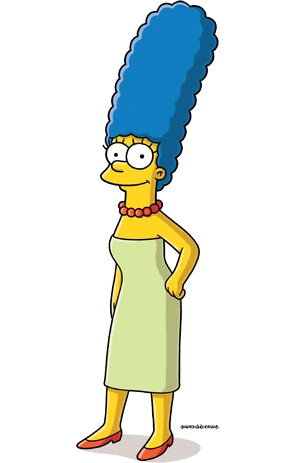

Simpson family
The Simpsons are the main protagonists of the TV show The Simpsons. The family first appeared on The Tracey Ullman Show, in the comedy short Good Night. The family has hundreds of relatives, including Mr. Burns and Patty and Selma.
Homer Simpson

Homer Jay Simpson (born May 12, 1951)[36] is the main protagonist of The Simpsons series (or show). He is the spouse of Marge Simpson and father of Bart, Lisa and Maggie Simpson. Homer is overweight (said to be ~240 pounds), lazy, and often ignorant to the world around him. Although Homer has many flaws, he has shown to have great caring, love, and even bravery to those he cares about and, sometimes, even others he doesn't. He also serves as the main protagonist of the The Simpsons Movie. He is 39 years old and was born in 1951.
- “D'oh!” ― Homer when he makes a mistake.
- “Why you little...!” ― Homer strangling or trying to strangle Bart/or someone else.
- “AAAAGHH!” ― Homer when hurt.
Marge Simpson
Marjorie Jacqueline "Marge" Simpson (née Bouvier[11]; born March 19) is the homemaker and matriarch of the Simpson family. She is also one of the five main characters in The Simpsons TV series. Marge is 36 years of age. She and her husband Homer have three children: Bart, Lisa, and Maggie. Marge is the moralistic force in her family and often provides a grounding voice in the midst of her family's antics by trying to maintain order in the Simpson household. Aside from her duties at home, Marge has flirted briefly with a number of careers ranging from a police officer to an anti-violence activist.
- “Hrmmm….” ―Marge's catchphrase
- “Now it's Marge's time to shine!” ―Marge Simpson
- “Oh, Homie!” ―Marge's love catchphrase
Bart Simpson

Bartholomew JoJo "Bart" Simpson (born April 1[7] or February 23[8]) is the Deuteragonist of The Simpsons. Bart is the mischievous, rebellious, misunderstood, disruptive and "potentially dangerous" oldest child. He is the only son of Homer and Marge Simpson, and the older brother of Lisa and Maggie. He also has been nicknamed "Cosmo", after discovering a comet in "Bart's Comet". Bart has also been on the cover on numerous comics, such as "Critical Hit", "Simpsons Treasure Trove #11", and "Winter Wingding". Bart also has a 100-issue comic series entitled the Simpson Comics Presents Bart Simpson. Bart is loosely based on Matt Groening and his older brother, Mark Groening.
- “Ay Caramba!” ―Bart's catchphrase and first words
- “Eat my shorts!” ―Bart's second catchphrase
- “I’m Bart Simpson, who the hell are you?” ―Bart's fourth catchphrase
Liza Simpson
Lisa Marie Simpson (born May 9)[9] is the elder daughter and middle child of the Simpson family and one of the two tritagonists (along with Marge,) of The Simpsons series. In "Homer and Lisa Exchange Cross Words" she is also known as Lisa Bouvier. She was named after a train called Lil' Lisa on her parents' 1st anniversary. She is a charismatic 8-year-old girl, who exceeds the standard achievement of the intelligence level of children her age. Not to everyone's surprise, she is also the moral center of her family. In her upbringing, Lisa lacks parental involvement of Homer and Marge, which leads to hobbies such as playing saxophone and guitar, riding and caring for horses, and interest in advanced studies. In school, Lisa's popularity is affected by those who view her as a geeky overachiever, which leaves her with only a few friends. She focuses on her goals and strives to reach her potential, and at the age of eight, she is already a member of Mensa with an IQ of 159. Her lack of parental involvement also leads to her lashing out to those who she deems lower than her or even above her. She has extreme jealously from time to time and will do whatever it takes to reclaim her title as the smartest; but only if she deems it necessary. Otherwise, she's the intelligent one who usually thinks things through.

- “Bart!” ―Lisa's first word [src]
- “If anyone wants me, I'll be in my room.” ―Lisa's "catchphrase" [src]
- “BAAAAART!!” ―Lisa’s catchphrase